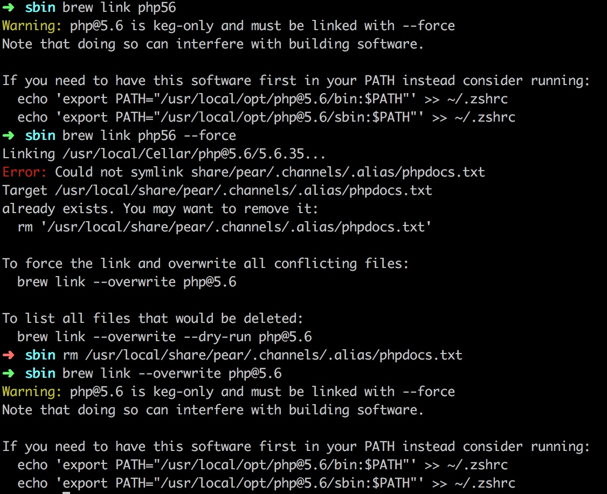

brew切换php版本遇到问题
需要切换版本原因
有一套老代码，没有使用框架，里面好多方法php7不支持，只能使用php5.6
正常切换流程
brew services php71 stop
brew unlink php71
brew link php56
brew services php56 start
遇到的问题
- brew services php56 start启动不起来fpm
解决方案：卸载重装
- brew uninstall php56 提示“Uninstalling /usr/local/Cellar/php56/5.6.30_6... (284 files, 15.2MB)Error: Directory not empty @ dir_s_rmdir - /usr/local/Cellar/php56/5.6.30_6
解决方案：
cd /usr/local/Cellar/php56/5.6.30_6
sudo rm -rf *
#重新安装
brew install php56
- 安装完php5.6后，执行brew link php56，报错

这个报错感觉死循环了。。。
解决方案：我的目的就是启动fpm，既然php5.6已经安装上了，我自己手动启动fpm就是了
cd /usr/local/opt/php@5.6/sbin
php-fpm -y /usr/local/etc/php/5.6/php-fpm.conf
- 高高兴兴测试程序，结果方法还是无法使用，使用phpinfo()查看，PHP版本7.1.7
解决方案：
刚开始以为是php.ini的问题，使用
php-fpm -y /usr/local/etc/php/5.6/php-fpm.conf -c /usr/local/etc/php/5.6/php.ini
重新启动php-fpm，发现php版本依然没变；突然感觉php版本应该与php.ini配置文件无关，而应该与php执行文件或者是zend虚拟机有关。
然后查看/usr/local/opt/php@5.6/bin下有php执行程序，执行./php -v，发现版本为5.6.35，感觉问题应该就解决了
which php查看了系统默认php命令位置：/usr/bin/php；
ls -l /usr/bin/php
该文件不是软链
执行 sudo mv /usr/bin/php /usr/bin/php-7.1.7结果提示mv: rename php to php-7.1.7: Operation not permitted
网上查询原因：为了防止系统被入侵，mac系统部分文件夹无写权限
如果需要修改，需要重启按住 Command+R，进入恢复模式，打开Terminal，执行：csrutil disable（恢复的话，同样方式进入，执行：csrutil enable）
感觉每次切版本都要修改这玩意儿，太变态了，不行。
突然想到，为什么要改呢，我让/usr/local/opt/php@5.6/bin路径，在环境变量中的位置比/usr/bin靠前就好了呀
查看~/.zshrc(zsh resource文件，bash对应文件~/.bashrc)，在文件末尾添加
export PATH="/usr/local/opt/php@5.6/bin:$PATH"（ps:这命令在前面错误截图上有过提示，但是执行了也是一样继续出错误）
保存退出后，执行
source ~/.zshrc
然后重启fpm
php-fpm -y /usr/local/etc/php/5.6/php-fpm.conf
查看php版本，yes～～～问题解决
思考（后续继续查找原因，困死。。）
1. 为什么好好的环境就会突然失效呢
2. 为什么默认PHP版本是7.1.7 而/usr/local/opt/php71/bin下，执行./php -v 版本为7.1.13
3. brew的link，unlink都做了哪些操作，可以使php版本进行切换，而我自己修改却需要进入恢复模式（难道7.1.7是系统自带的，因为brew也没有权限切换了，导致环境失效？）
4. 突然又发现，切换为brew安装的php7，页面上phpinfo中版本为7.1.13，why。。。。
临时php切换方案
php7->php5:
1. brew services php71 stop
2. 修改~/.zshrc，添加环境变量
3. source ~/.zshrc
4. /usr/local/etc/php/5.6/sbin/php-fpm -y /usr/local/etc/php/5.6/php-fpm.conf
php5->php7:
1. 修改~/.zshrc，删除无用环境变量
2. 新打开终端
3. brew services php71 start